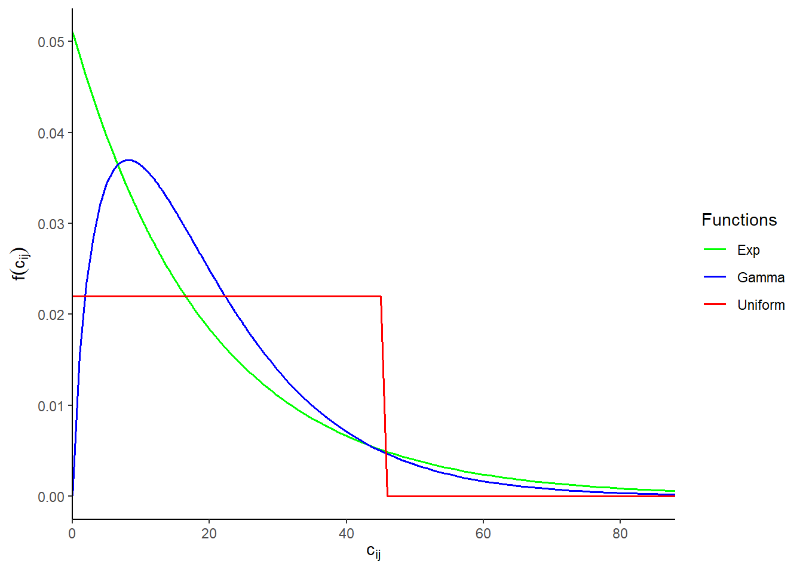
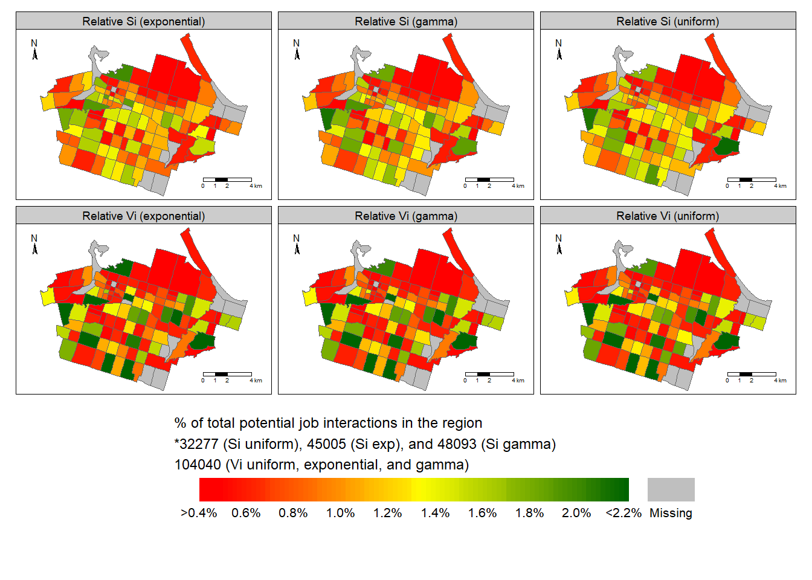
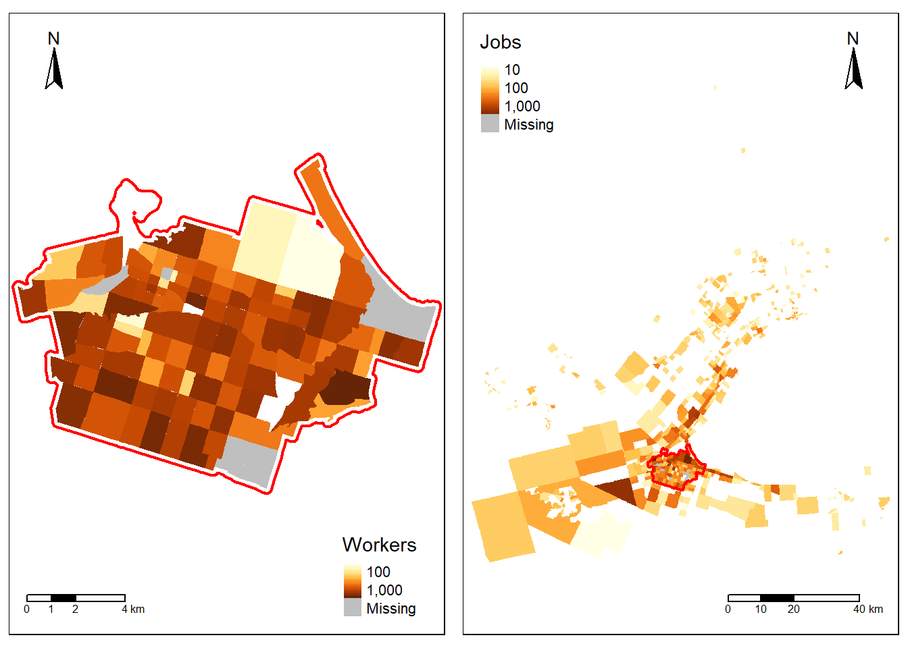

Planning with accessibility measures: unconstrained and constrained accessibility
This blog post is the second part of a multi-part series. This series aims to walk readers through the potential uses of accessibility measures in transportation equity planning. This post explores different accessibility measures and how impedance function selection impacts results. Read the first post (LINK TO POST1) for an introduction to what is accessibility and defining impedance functions. In a subsequent posts, accessibility methods to conceptualize and analysis equity will be explored.
Accessibility (or access) has many definitions. Within the context of transportation planning, accessibility can be defined as a measure of the amount of interaction a population potentially has with opportunities in a given region. It is a product of the land-use and the population’s means of transportation: the population are the people that live within the region and the opportunities are the destinations of interest to the population or of the transportation network itself.
In this post, we distinguish between two types of accessibility measure conceptualizations: unconstrained and constrained measures. This distinction is important to help those interested in advocating for, planning and researching transportation, interpret outputs. This interpretation can allow us to quantify how much access to opportunities should be increased by and better formulate equity targets.
First, let’s detail unconstrained accessibility. The general form of the unconstrained measure is represented as \(S_i\) and is the measure proposed by (Hansen 1959). This measure is from which many accessibility measures are derived and continue to derive from to this day. \(S_i\) is an accessibility value that is calculated for each spatial unit. This value is the summation of all the \(O_j\) available (i.e., reachable) at each spatial unit according to some impedance function \(f(c_{ij})\). \(S_i\) is defined in Equation 1.
\[ S_i = \sum_{j=1}^JO_j \cdot f(c_{ij}) \tag{1}\]
Where for both unconstrained (\(S_i\)) and constrained measure (\(V_i\)):
- \(c_{ij}\) is a measure of the cost of moving between \(i\) and \(j\).
- \(f(\cdot)\) is an impedance function of \(c_{ij}\); it can take the form of any monotonically decreasing function chosen based on positive or normative criteria (Paez, Scott, and Morency 2012).
- \(i\) is a set of origin locations (\(i = 1,\cdots,N\)).
- \(j\) is a set of destination locations (\(j = 1,\cdots,J\)).
- \(O_j\) is the number of opportunities at location \(j\); \(O = \sum_{j=1}^J O_j\) is the total supply of opportunities in the study region.
Many variations of \(S_i\) have been proposed - but largely they focus on tweaks to the \(f(c_{ij})\) operationalized. This measure fundamentally counts \(O_j\) (after being weighted by \(f(c_{ij})\)) for each \(i\). This means that the score that is assigned to each \(i\) is the summation of all the opportunities that can be potentially interacted with. However, counting all opportunities of potential interaction may not make sense for certain opportunities.
As a hypothetical example, one can live in a part of the city where one has relatively exceptional accessibility to job opportunities as a result of land-use and transit options. Say this accessibility is a value of “100,000 potential job opportunities”. However, imagine if their neighbourhood and their adjacent neighbourhoods have 150,000 people who can also reach those same 100,000 job opportunities. Though they can potentially interact with a relatively high accessibility value of 100,000 opportunities, they may have less available opportunities as a result of relatively high neighbouring demand for opportunities. When compared to other areas of the city with relatively lower accessibility values but with a similar level of job opportunities and population demand, those other areas in the city may have more potential spatial availability than the neighbourhood where our hypothetical person lives.
This is the concept of competition, and has been applied to the unconstrained accessibility measure within the influential works of Shen (1998) and Weibull (1976), as well as the widely used in the two-step floating catchment approach (2SFCA) approach of Luo and Wang (2003). These works can be thought to adjust \(S_i\) (unconstrained accessibility) to account for the population’s demand for opportunities in the region of interest.
In the recently published journal article by (Soukhov et al. 2023), we propose an alternative derivation of Shen (1998) accessibility with competition that explicitly clarifies an inconsistency in its formulation. We conceptualize this measure as competitive accessibility that is singly constrained (akin to singly-constrained spatial interaction models (LINK?)).
In other words, the total number of opportunities in the study region are preserved i.e. if a city has 1,000,000 opportunities a proportion of those opportunities are allocated to each spatial units in the region such that all the spatial availability scores sum up to equal 1,000,000. Spatial availability \(V_i\) and its mathematical formulation is defined in Equation 2:
\[ V_i = \sum_{j=1}^NO_jF^t_{ij} \\ \text{Where: } F^t_{ij} = \frac{F^p_{i} \cdot F^c_{ij}}{\sum_{i=1}^N F^p_{i} \cdot F^c_{ij}} \tag{2}\]
Where \(V_i\) contains all the parameters from unconstrained accessibility measure in addition to:
- \(F^t_{ij}\) is a balancing factor defined the population balancing factor (\(F^p_{i} = \frac{P_{i}^\alpha}{\sum_{i=1}^N P_{i}^\alpha}\)) and travel impedance balancing factor (\(F^c_{ij} = \frac{f(c_{ij})}{\sum_{i=1}^N f(c_{ij})}\))
It should be understood that both measures are a weighted sum of opportunities. \(S_i\) is the sum of all opportunities that can be potentially interacted with (i.e., unconstrained summation) while \(V_i\) allocates opportunities through the balancing factors in a constrained way.
In \(V_i\), the balancing factor \(F^p_{i}\) corresponds to the proportion of the population in origin \(i\) relative to the population in the region. On the right hand side of the equation, the numerator \(P_{i}^\alpha\) is the population at origin \(i\). The summation in the denominator is over \(i=1,\cdots,N\), and adds up to the total population of the region. Notice that we incorporate an empirical parameter \(\alpha\). The role of \(\alpha\) is to modulate the effect of demand by population. When \(\alpha <1\), opportunities are allocated more rapidly to smaller centers relative to larger ones; \(\alpha>1\) achieves the opposite effect.
\(F^c_{ij}\), the impedance balancing factor, uses the impedance function to proportionally allocate more jobs to closer population centers, that is, to those with populations more willing to reach the jobs. Indeed, \(F^c_{ij}\) can be thought of as the proportion of the population at \(i\) willing to travel to destination \(j\), conditional on the travel behavior as described by the impedance function.
Overall, these two measures can be complex to understand - but the outputs may demonstrate their intuition more clearly! In what follows, we calculate and visualize the unconstrained and constrained accessibility measures defined. We use the best-fitting probability distribution functions as impedance functions (defined in the previous post (LINK TO POST1)) as inputs in both measures \(S_i\) and \(V_i\).
Differences in accessibility results
For the purpose of this demonstration, unconstrained and constrained accessibility is calculated using data taken from the R data package {TTS0216R} and the home-to-work flows are provided at the spatial unit of traffic analysis zones (TAZ). {TTS0216R} contains a subset of home-to-work flows from the 2016 Transportation Tomorrow Survey (TTS) as well as calculated road-network car travel times (calculated using {r5r}). {TTS2016R} is detailed in this publication (Soukhov and Páez 2023) and is freely available to be explored here. The focus of this demonstration is on an urban planning boundary in Hamilton, Ontario.
The plots of the impedance functions used for both accessibility calculations are plotted in Figure 1: uniform function (red, \(T_{min}\) and \(T_{max}\) is 0 and 45 mins), exponential function (green, \(\beta\) (rate) is 0.05), and gamma function (blue, \(\alpha\) (shape) is 2 and \(\beta\) (rate) is 0.09. The data set and parameters were fit and discussed in the first blog post (LINK TO POST1).

In the following, we use the {accessibility} package to conveniently calculate unconstrained accessibility \(S_i\) (Equation 1) using the gravity() function, singly-constrained accessibility \(V_i\) (Equation 2) using the spatial_availability() function and the defined impedance functions shown in the above Figure 1. We plot the resulting scores for the Hamilton Center area for each impedance function as follows:

In Figure 2 above, we visualize all accessibility values as a percentage of the sum of the total values in the region for each calculation (i.e., the total values: 3.2277^{4}, 4.5005^{4}, and 4.8093^{4} jobs for \(S_i\) using binary, exponential, and gamma functions respectively and 1.0404^{5} jobs for \(V_i\) for all functions).
The value for each calculation is normalized because each impedance function weights the opportunities counted in differing ways and there is no process that evenly limits or redistributes the summation. As such, a common accessibility maximum across all plots cannot be determined since accessibility is a function of the summation of weighted opportunities. For this reason, the normalization of the accessibility values is done to make sense of relative ‘highs’ and ‘lows’ in the region.
Let’s look at the top row in Figure 2: unconstrained accessibility. Before normalization, the raw values can be understood as the number of job opportunities that people within Hamilton Center can potentially interact based on an empirically-fitted impedance function. For instance, for neighbourhoods with “high” accessibility (Greens - 1.80% relative values or higher), according to the uniform impedance this means they can interact with 576 jobs or more given a 45 min car travel time (our selected max threshold). For the exponential and gamma functions this “high” relative value is equivalent to 810 and 864 or higher potential jobs interactions. These raw values are difficult to interpret, so seeing a neighbourhood as being an area of relative ‘high’, ‘medium’ or ‘low’ accessibility value simplifies the interpretation of ‘potential interaction’.
Interestingly though, the trends across the top row visually look similar: TAZ that have ‘high’, ‘medium’ and ‘low’ values are similar across all plots. This indicates that the selection of impedance function, at least within this visualization, does not result in too much variation in the results. As discussed in the first post (LINK TO BLOG POST1), the selection of parameters for all impedance functions were optimally derived from empirical home-to-work travel flows, so seeing similar trends across plots is not unexpected. The selection of the parameters may matter more than the shape (i.e., type of theoretical distribution selected).
Next, let’s look at the second row in Figure 2: the visualization of singly-constrained accessibility (spatial availability \(V_i\)). Across all plots, the trends are even more similar than the trends across the top row of plots. This is because, the total sum of opportunities is the same across all impedance functions as the result of the proportional allocation feature.
Also, of note are the differences between constrained and unconstrained plots: namely, TAZ with low values (red) are often low in both plots, however, many low/medium value TAZ have high value TAZ in the second row. Why? Because opportunity-seeking competition is considered in the constrained calculations!
For instance, in the top row, some TAZ in the south have medium (yellowish) singly-constrained values. This is the result of relatively average impedance values. However, looking at the bottom row, the same relatively average impedance values combined with relatively low competition results in TAZ result in relatively high (green) values under the constrained calculation. This indicates that though some TAZ have medium/low unconstrained accessibility (i.e., potential interaction), when considering the neighbours who are competing for the same opportunities, the constrained accessibility score is high. These TAZ may in fact have fine accessibility levels, considering their low competition, and the focus should be improving areas with low constrained accessibility (red).
Across both rows, we can see common low values (red) TAZ located in the north end of the city. From unconstrained accessibility, we know these TAZ have high relative travel impedance - this is most likely because people who work in the north end do not live in Hamilton Center and thus have high travel times (recall: the accessibility calculations in this demonstration only considers trips that originate from Hamilton Center, almost 50% of those who live within Hamilton Center travel to areas outside of Hamilton Center for work). Interestingly though, we can see that there is a high relative number of jobs within these TAZ (see Figure 3 below), however, even the number of jobs does not balance out the impedance value and higher demand for those jobs. Hence, the unconstrained accessibility measure is also low.

Concluding points
Accessibility measures characterize the relationship between land-use and transportation travel impedance. How the relationship is conceptualization (if there’s competition or not) and how the travel impedance should be weighted (what function describes travel behaviour) are critical.
Depending on how this analysis is conducted will shed light on regions of inequitable accessibility. From our plots, areas that have low unconstrained accessibility (\(S_i\)) are worth inspecting but areas with low constrained (\(V_i\)) should be prioritized. Since places of employment are non-divisible (only 1 person can take 1 job), taking into consideration competition matters for this opportunity type.
Ultimately, the accessibility values represent the number of jobs that could potentially be reached by from each origin. We should take action in increasing accessibility in areas that are yellow and red to reduce inequities of access. But by using constrained accessibility measures - we can see that not all yellow and red areas have low constrained accessibility. They may have relatively fine accessibility given their neighbouring demand for opportunities.
Access to opportunities is a multi-faceted concept. The use of multiple indicators can illuminate spatial patterns of inequities and add another layer of confidence to the quantitative analysis. But our journey is not done. Once these spatial inequities have been identified - what do we do about it?
Another advantage of using competitive accessibility, namely spatial availability, is the proportional allocation feature. Since the number of opportunities for the region is proportionally allocated to each origin - the raw output can be used to plan for how many more opportunities are needed for each origin. Further, because spatial availability values per origin can also be divided by population at that origin. This can be interpreted as an opportunity per capita value. This value can be used as a benchmark to compare again opportunity per capita across areas of the region and between regions. This, along with different equity conceptualizations, will be explored in a following post.
Openness is legitimacy: this blog post was written in a R environment and can be fully reproduced from the materials available at this GitHub (repository). If inclined, see the open access PDF of the full article (which includes the mathematical formulation for the spatial availability function) in the references (Soukhov et al. 2023).
The data used in this post is a subset of data from {TTS2016R}, the plots are created using {tmap}, and spatial objects are manipulated using {sf}, along with base {R} functions.